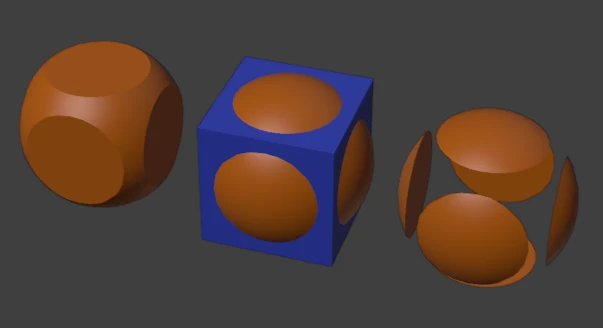
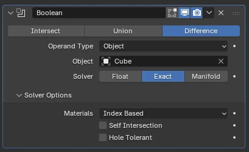

Wall thickness
Interior walls run about 0.1–0.15m thick. Exterior walls are often 0.2–0.3m. Pick one and write it down.
Hard-Surface Modeling · 50–65 minutes · Grades 7–12
Anyone can draw a window with a texture. This lesson cuts an actual opening through a solid wall using the Boolean modifier, then frames it with a real 3D frame and muntins you can walk up to from any angle.
Finish line: a wall segment with a clean, beveled, four-pane window cut all the way through it.
Boolean Difference: wall minus cutter cube = a real opening with real thickness on every edge.
Plan
Before you cut anything
Interior walls run about 0.1–0.15m thick. Exterior walls are often 0.2–0.3m. Pick one and write it down.
A believable residential window is roughly 0.9m × 1.2m, with its sill about 0.9m off the floor.
Single pane, a 2×2 grid, or a 3×1 grid of panes? Sketch it on paper before you touch Blender.
Boolean
Two objects, one operation
A Boolean modifier compares two meshes and combines them mathematically. Difference subtracts one from the other — exactly what a window opening needs.
Cut a hole
Removes the cutter object's volume from the target. This is the operation you want for windows and doors.
Merge shapes
Combines two objects into one solid volume, removing the seam between them.
Keep overlap
Keeps only the volume where both objects overlap — rarely used for architecture, common in prop detailing.
Select the wall and the cutter, then press Ctrl+A → Scale on both before adding the modifier. A Boolean run on un-applied scale is the single most common cause of broken geometry.

Frame
Trim the opening
In Edit Mode on a frame ring object, select the inner face loop and press I to inset it, creating a lip the glass pane will sit behind.
Press E to push the inset face back into the wall thickness so the frame reads as a real object, not a flat decal.
Properties Editor → Modifiers (wrench) → Add Modifier → Generate → Bevel Use a small width (around 0.003m). Sharp CG edges catch no light and read as fake.
Model one vertical bar, then use Properties Editor → Modifiers (wrench) → Add Modifier → Generate → Array. Set Count to repeat it evenly instead of duplicating by hand.

Build
Hands on
Add a Cube, then enter exact numbers at 3D Viewport → Sidebar (N) → Item → Transform → Dimensions: roughly 3m wide × 2.5m tall × 0.15m thick.
Add a second Cube sized to your window opening (about 0.9m × 1.2m), thicker than the wall on the depth axis so it cuts all the way through. Position it where the window belongs.
Select the wall, then use Properties Editor → Modifiers (wrench) → Add Modifier → Generate → Boolean. Set Operation to Difference and Object to the cutter. Then hide or delete the cutter.
Add a Cube around the opening, enter Edit Mode, and use Inset (I) and Extrude (E) to shape it into a ring that overlaps the wall's cut edge.
Add a thin Plane inside the frame for glass. Model one muntin bar and Array it across the opening.
For the frame and muntins use Properties Editor → Modifiers → Add Modifier → Generate → Bevel, then Ctrl+S.
Fix
Read the surface, not just the shape
Normals are flipped. Enter Edit Mode, select all (A), and press Shift+N to recalculate normals outward.
Z-fighting — two faces occupy nearly the same plane. Nudge the glass pane a hair off the frame's inner face.
Usually un-applied scale, or a cutter with non-manifold geometry. Rebuild the cutter as a clean primitive Cube.
The Bevel modifier's Limit Method should be Angle, so it only rounds hard corners and leaves flat faces alone.
Enable 3D Viewport header → Viewport Overlays popover (two circles) → Geometry → Face Orientation while diagnosing normals — outward faces render blue, inward-facing faces render red.
Check